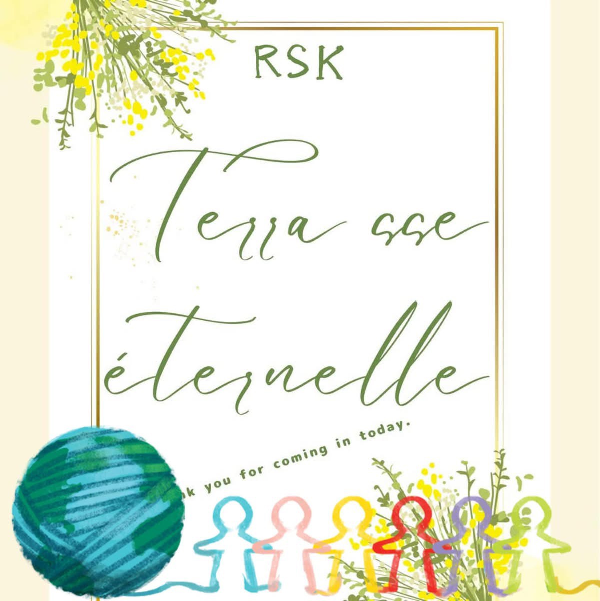

テラス エターナルについて
人が集い、学び、未来へつなぐために
テラエタのはじまりと想い

ここは1995年に、自宅兼事業用スペースとして建てられました。
整体治療院、女子サッカーの文化を生み出す場、学習塾など、長年にわたり人が集い、
語り合う場として使われてきました。
2011年の東日本大震災では、周囲一帯が甚大な被害を受ける中、
この家は幸いなことに建ち残りました。
「この地で生かされた意味は何か」「ここに住み続けられるのか」「ここで何ができるのか」――。
その問いと向き合い続け、震災から15年という節目を迎えた今、
この場所を多目的レンタルスペース
「RSK テラスエターナル」として
ひらくことを決意しました。
子どもからシニア世代まで、
誰もが自分らしく輝き、人と人とのつながりを感じられる居場所であること。
それが、このテラスに込めた願いです。
これまでの歩み
- 1995年 自宅兼事業用スペースとして建築
- 2004年 学習塾「伊東義塾 上釜教室」開設
- 2006年 女子サッカーチームの地域拠点として活動
- 2011年 東日本大震災を経験
- 2025年 RSK テラスエターナルとして再スタート
地域とともに
このテラスは、用途を限定しません。
変幻自在に幅広くご活用いただけます。
イベント、ワークショップ、セミナー、交流の場――。
「こんなことができたらいいな」という想いを、
地域の皆さまと一緒に形にしていく場所でありたいと考えています。
上釜地区の魅力
RSK テラス エターナルがある上釜地区は、
住宅地でありながら、どこか懐かしさとあたたかさを感じられる地域です。
昔から人と人とのつながりが大切にされ、
声を掛け合い、支え合いながら暮らしが営まれてきました。
震災を経験したこの地域には、
「忘れないこと」「次の世代へ伝えること」という想いが息づいています。
上釜地区という場所だからこそ生まれる、
学び・交流・文化・防災の拠点として、
RSK テラス エターナルは地域とともに歩み続けます。
- 静かで落ち着いた住宅地
- 世代を越えた人のつながり
- 地域活動・学びが根付く土壌
- 震災の記憶を未来へ繋ぐ
まずは見学やご相談からでも大丈夫です。